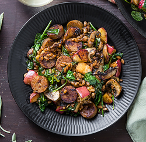

Apple & Herbed Sausage Skillet

Description
A delicious and nutritious sausage skillet taking advantage of Field Roast's apple sage sausage!
Ingredients
- ½ cup farro
- 2 links Field Roast® smoked apple sage sausage
- 6 oz cremini mushrooms
- 1 shallot
- 2 garlic cloves
- 1 apple
- 2 tbsp balsamic vinegar
- 1 tbsp French mustard and herb blend
- 4 oz baby spinach
- 3 tbsp olive oil*
- Salt and pepper to taste
Instructions
-
Add the farro to a small saucepan and cover with at least 1 inch cold water. Bring to a boil, reduce heat to low,
and cook until the grains are tender, about 15 to 18 minutes. Drain any excess water.
-
Remove the sausage from the plastic wrapper and thinly slice into rounds. Place a large nonstick skillet over medium-high
heat with 1 tbsp (2 tbsp) olive oil. Add the sliced sausage and cook, stirring occasionally, until browned and crispy,
about 5 to 6 minutes. Transfer the crispy sausage to a plate.
-
Wipe the mushrooms with a damp towel to clean, and slice. Peel and mince the shallot. Mince the garlic. Dice the apple.
Return the skillet to medium-high heat with 2 tbsp (4 tbsp) olive oil. Add the sliced mushrooms and cook until softened,
about 3 to 4 minutes. Add the minced shallot, minced garlic, diced apple, and a pinch of salt and pepper to the skillet and cook,
tossing occasionally, until the apple is caramelized in places, about 4 to 6 minutes.
-
Add the balsamic vinegar to the skillet and cook until it evaporates, about 30 seconds. Add the cooked farro, spinach, and
French mustard & herb blend and toss well. Cook until the spinach is wilted, about 3 to 4 minutes.
-
Top the skillet with the crispy sausage. Divide the apple & herbed sausage skillet between plates. Enjoy!